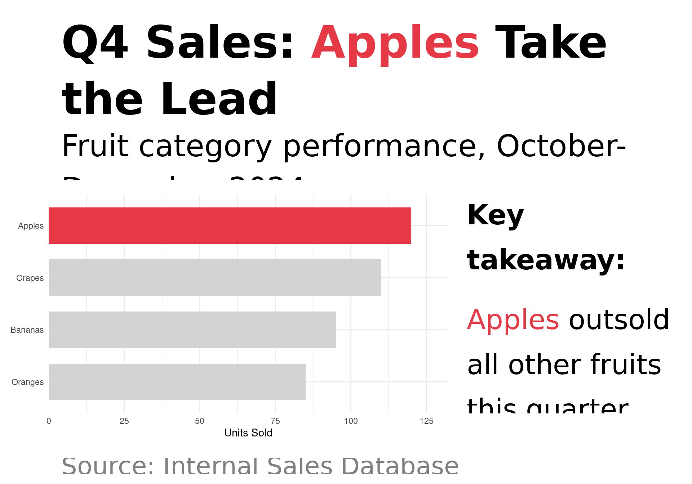

The stwd package includes functions inspired by Storytelling with Data principles for creating presentation-ready charts. These tools help you: - Combine charts with narrative text - Create self-documenting titles with colored category names - Use color strategically for emphasis - Build complete “story” layouts with one function call
The SWD Approach
Traditional charts put the burden on the reader to interpret meaning. SWD-style charts guide the reader by:
Highlighting what matters - Gray out the noise, color the signal
Embedding the legend in the title - No separate legend box needed
Adding narrative context - Explain the “so what?” alongside the chart
Using a clear visual hierarchy - Big title, supporting chart, explanatory text
Quick Start: story_layout()
The story_layout() function combines all elements into a complete presentation-ready visualization. By default, titles are large and prominent (16pt), following the Storytelling with Data approach.
df <-data.frame(product =c("Apples", "Oranges", "Bananas", "Grapes"),sales =c(120, 85, 95, 110))# Highlight only the winnerfill_colors <-highlight_colors( df$product,highlight =c("Apples"="#E63946"))# Create the base chartp <-ggplot(df, aes(x =reorder(product, sales), y = sales, fill = product)) +geom_col(width =0.7) +coord_flip() +scale_fill_manual(values = fill_colors, guide ="none") +scale_y_continuous(expand =expansion(mult =c(0, 0.1))) +theme_minimal() +labs(x =NULL, y ="Units Sold")# Compose the full story - title is large by default (16pt)story_layout(plot = p,title ="**Q4 Sales: {#E63946 Apples} Take the Lead**",subtitle ="Fruit category performance, October-December 2024",narrative ="**Key takeaway:**{#E63946 Apples} outsold all other fruitsthis quarter, driven by seasonal demandand promotional pricing.Grapes came in second at 110 units,while Oranges lagged at just 85.**Recommendation:** Increase appleinventory for Q1 to meet expected demand.",caption ="Source: Internal Sales Database")

Building Blocks
highlight_colors(): Strategic Color Use
Instead of coloring everything, highlight only what matters:
categories <-c("A", "B", "C", "D", "E")# Single highlight with default bluehighlight_colors(categories, "C")
A B C D E
"#D3D3D3" "#D3D3D3" "#1E90FF" "#D3D3D3" "#D3D3D3"
# Multiple highlights with custom colorshighlight_colors( categories,highlight =c("A"="#E63946", "D"="#2A9D8F"))
A B C D E
"#E63946" "#D3D3D3" "#D3D3D3" "#2A9D8F" "#D3D3D3"
marquee_title(): Self-Documenting Titles
Embed colored category names directly in your title:
fill_colors <-c("Revenue"="#2A9D8F","Costs"="#E63946","Profit"="#1E90FF")marquee_title("{Revenue} grew faster than {Costs}, boosting {Profit}", fill_colors)